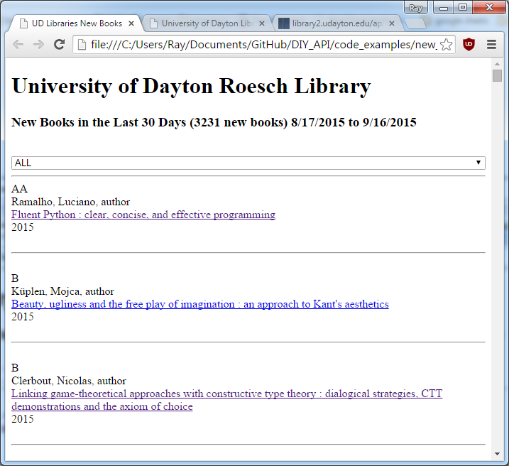
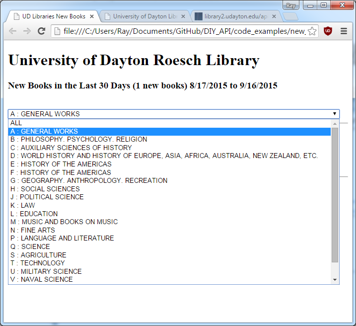
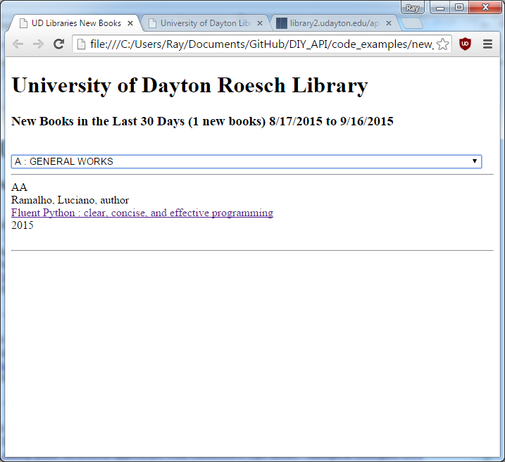

DIY APIs
A Do-It-Yourself Approach To
Creating Custom Read-Only APIs
Using Sierra SQL and PHP
Ray Voelker
University of Dayton Libraries
Question ...
Has anyone started to use the SQL features of Sierra?
Overview
- What’s an API?
-
DIY API Examples:
- Study Room Availability
- Inventory Barcode Scanning into Google Sheets
- New Books List
- Conclusions / Answer Some Questions
What is an API?
In computer programming ...
Application Programming Interface
... A good API makes it easier to
develop a program by providing all the building blocks. A programmer
then puts the blocks together.
source: https://en.wikipedia.org/wiki/Application_programming_interface
What is a RESTful API?
Representational State Transfer is a software
architecture style for building scalable web services.
...
communicate over the Hypertext Transfer Protocol with the same HTTP verbs
(GET, POST, PUT, DELETE, etc.) which web browsers use to retrieve web
pages and to send data to remote servers.
source: https://en.wikipedia.org/wiki/Representational_state_transfer
What is it really?!
A technique using HTTP requests to get data out of the Sierra Database quickly, and easily. The data we get out is in a format that can be readily used by a wide range of other applications.
http://library2.udayton.edu/api/getInventoryData/item_barcode.php?barcode=R701498024
{
"call_number_norm": "PS 3553 R48 S6 1993",
"location_code": "rws",
"item_status_code": "-",
"best_title": "Sphere : a novel",
"due_gmt": "2015-12-29 04:00:00-05",
"inventory_gmt": "2007-02-22 14:44:38-05"
}


My Recipe For A DIY RESTful API
1. Keep It Simple Stupid
2. Create (or use) as simple of an SQL query as possible.

https://xkcd.com/1349/
3. Keep your inputs(if any) simple and limited. Sanitize any inputs!

https://xkcd.com/327/
4. Connect to database server, prepare the SQL statement, issue query, and get results.
5. Prepare and encode results into JSON (or JSONP) format, and return them over HTTP.
Example #1
Study Room Availability
Study Room Availability Sierra SQL
SELECT
i.item_status_code,
c.checkout_gmt,
c.due_gmt,
p.best_title,
p.best_title_norm
--- continued ... ---
Study Room Availability Sierra SQL (cont'd)
FROM
sierra_view.item_record AS i
LEFT OUTER JOIN sierra_view.checkout AS c
ON (i.record_id = c.item_record_id)
LEFT OUTER JOIN sierra_view.bib_record_item_record_link AS l
ON (i.record_id = l.item_record_id)
JOIN sierra_view.bib_record AS b
ON (l.bib_record_id = b.record_id)
JOIN sierra_view.bib_record_property AS p
ON (b.record_id = p.bib_record_id)
--- continued ... ---
Study Room Availability Sierra SQL (cont'd)
WHERE
(i.itype_code_num = 69 OR i.itype_code_num = 71)
AND i.is_suppressed = FALSE
AND b.is_suppressed = FALSE
ORDER BY
p.best_title_norm ASC
---
PHP Implementation of the Study Room RESTful API
Code Samples
Sanitize inputs
<?php
/* replace all the non alphanumeric characters from the
callback function name */
if(isset( $_GET['callback'] )) {
$callback = preg_replace("/[^a-zA-Z0-9\s]/",
"",
$_GET['callback']
);
}
?>
PHP Implementation of the Study Room RESTful API
Code Samples (cont'd)
Connect to database server, prepare the SQL statement, issue query, and get results.
<?php
try {
$connection = new PDO($dsn, $username, $password);
}
// ...
$statement = $connection->prepare($sql);
$statement->execute();
$row = $statement->fetchAll(PDO::FETCH_ASSOC);
?>
PHP Implementation of the Study Room RESTful API
Code Samples (cont'd)
Encode results into JSON (or JSONP) format, and return them over HTTP
<?php
/* return JSONP data if a callback name was specified,
otherwise return plain JSON data */
if(isset ($callback)) {
header('Content-Type: text/javascript; charset=utf8');
echo $callback . '(' . json_encode($row) . ')';
}
else {
header('Content-Type: application/json; charset=utf8');
echo json_encode($row);
}
?>
Study Room Availability Output
(Sample JSON object)
[
{
"item_status_code": "-",
"checkout_gmt": null,
"due_gmt": null,
"best_title": "Study Room 2 - A",
"best_title_norm": "study room 2 a",
"available": true
},
{
"item_status_code": "-",
"checkout_gmt": "2015-08-31 16:09:14-04",
"due_gmt": "2015-08-31 17:45:00-04",
"best_title": "Study Room 2 - B",
"best_title_norm": "study room 2 b",
"available": false
}
]
Study Room Availability Output
(Sample JSONP object)
callback([
{
"item_status_code": "-",
"checkout_gmt": null,
"due_gmt": null,
"best_title": "Study Room 2 - A",
"best_title_norm": "study room 2 a",
"available": true
},
{
"item_status_code": "-",
"checkout_gmt": "2015-08-31 16:09:14-04",
"due_gmt": "2015-08-31 17:45:00-04",
"best_title": "Study Room 2 - B",
"best_title_norm": "study room 2 b",
"available": false
}
])
Study Room Availability Sample Web Page
(after JavaScript calls RESTful API, and processes the data)

( The full sample, including the HTML, JavaScript, and RESTful API implemented in PHP are available for download from my GitHub linked later in this presentation )
Example #2
Inventory Barcode Scanning into Google Sheets
Inventory Barcode Sierra SQL
SELECT
upper(p.call_number_norm ||
COALESCE(' ' || v.field_content, '')
) as call_number_norm,
i.location_code,
i.item_status_code,
i.inventory_gmt,
b.best_title,
c.due_gmt
FROM
sierra_view.phrase_entry AS e
JOIN
sierra_view.item_record_property AS p
ON
e.record_id = p.item_record_id
JOIN sierra_view.item_record AS i
ON
i.id = p.item_record_id
LEFT OUTER JOIN sierra_view.checkout AS c
ON
i.id = c.item_record_id
--these two JOIN statements will get the
-- Title and Author from the bib
JOIN
sierra_view.bib_record_item_record_link AS l
ON
l.item_record_id = e.record_id
JOIN
sierra_view.bib_record_property AS b
ON
l.bib_record_id = b.bib_record_id
LEFT OUTER JOIN
sierra_view.varfield AS v
ON
(i.id = v.record_id) AND (v.varfield_type_code = 'v')
WHERE
e.index_tag || e.index_entry = 'b' || UPPER('r701498024')
OR
e.index_tag || e.index_entry = 'b' || LOWER('r701498024')
PHP Implementation of the RESTful API
- Much of the code is the same from the first example!
-
The only input parameter for this RESTful API is the item barcode
- We "sanitize" this input based upon our library barcode length: 10 alphanumeric characters (no punctuation or symbols) in our case
-
This particular API is only going to be used in Google Apps Scripting which will utilize the JSON object we return
- A Google Apps Scripting API ( UrlFetchApp.fetch() ) calling our custom RESTful API!
RESTful API - Inventory Barcode In Action
Inventory Barcode Scanning into Google Sheets
( The full sample, including the HTML, JavaScript, and RESTful API implemented in PHP are available for download from my GitHub linked later in this presentation )
Example #3
New Books List
New Books List Overview
Show items to the public that were cataloged in the last 30 days
Allows patrons to limit the output based on classification (Library of Congress)
May want to add the ability for patrons to "subscribe" to the new books list through e-mail ... sending them only the classifications they may be interested in
New Books List Sierra SQL
SELECT
b.record_id,
b.cataloging_date_gmt::DATE AS cataloging_date_gmt,
p.best_author,
p.best_title,
p.publish_year,
r.record_num,
UPPER(
x.call_number_prefix
) as call_number_prefix,
UPPER(
COALESCE (i.call_number_norm, x.call_number_prefix)
) as call_number_norm
FROM
sierra_view.bib_record AS b
JOIN
sierra_view.record_metadata AS r
ON r.id = b.record_id
LEFT OUTER JOIN
sierra_view.bib_record_call_number_prefix AS x
ON x.bib_record_id = b.record_id
LEFT OUTER JOIN
sierra_view.bib_record_property AS p
ON p.bib_record_id = b.record_id
LEFT OUTER JOIN
sierra_view.bib_record_item_record_link AS l
ON l.bib_record_id = b.record_id
LEFT OUTER JOIN
sierra_view.item_record_property AS i
ON l.item_record_id = i.item_record_id
WHERE
b.cataloging_date_gmt >= date('07-01-2015')
AND b.cataloging_date_gmt < date('08-31-2015')
AND b.is_suppressed is FALSE
--if we want to do any call number limiting ...
-- we can use this part of the where clause
-- AND x.call_number_prefix LIKE LOWER('A')
GROUP BY
b.record_id,
cataloging_date_gmt,
p.best_author,
p.best_title,
p.publish_year,
r.record_num,
call_number_prefix,
call_number_norm
ORDER BY
call_number_prefix,
call_number_norm
PHP Implementation of the New Books RESTful API
Again, mostly the same code as the previous two examples!
PHP Implementation of the New Books RESTful API
Sanitize inputs
<?PHP
if(isset( $_GET['call_number_prefix'] )) {
// call number prefix can be at most 3 characters, and must
// only consist of letters
// ... unless we are requesting something else from the
// prefix ... like the null values for example
switch($_GET['call_number_prefix']) {
case 'null' :
$call_number_prefix = null;
$call_number_prefix_sql =
'AND x.call_number_prefix is null';
break;
case 'all' :
case 'ALL' :
case 'All' :
break;
default :
$call_number_prefix = substr(
preg_replace("/[^a-zA-Z\s]/",
"",
$_GET['call_number_prefix']),
0,3
);
break;
} //end switch
} //end if
else{
$call_number_prefix = null;
$call_number_prefix_sql = null;
} //end else
?>
New Books List Sample Web Page
New Books List Sample Web Page
New Books List Sample Web Page
This presentation, along with all samples, can be found on GitHub!